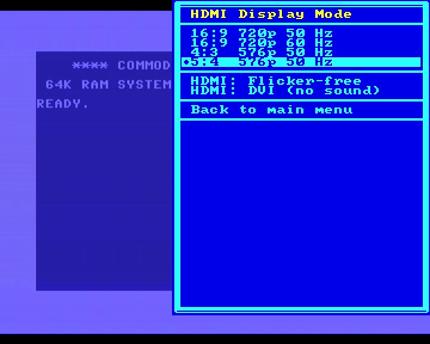
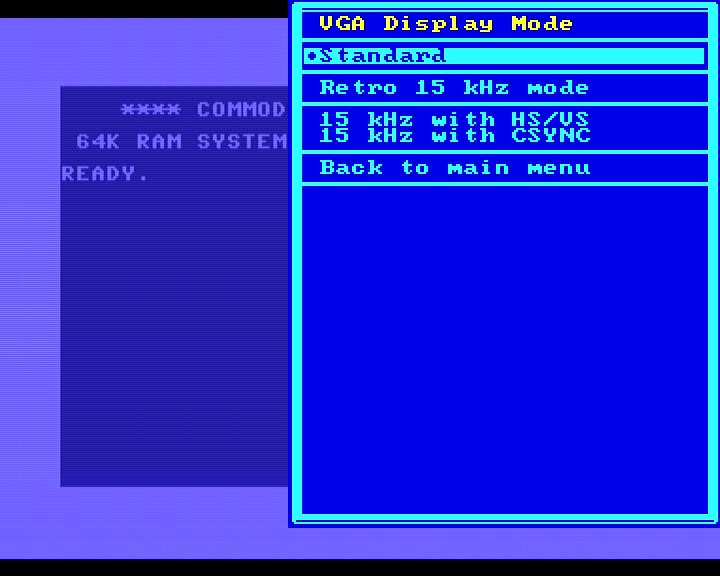
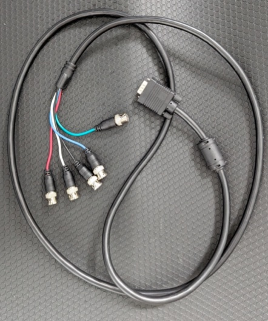
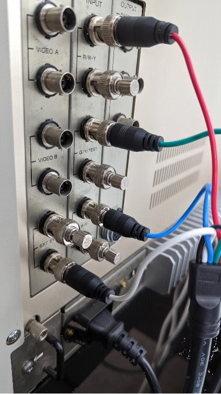
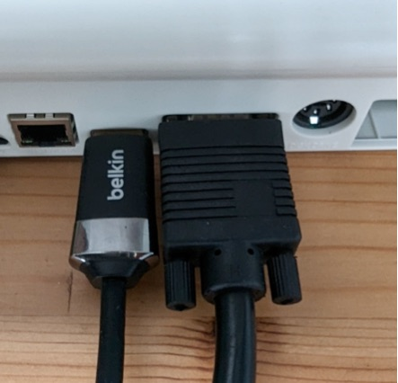
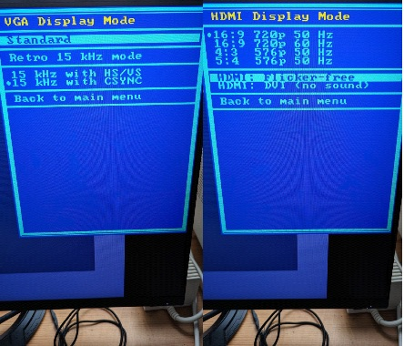
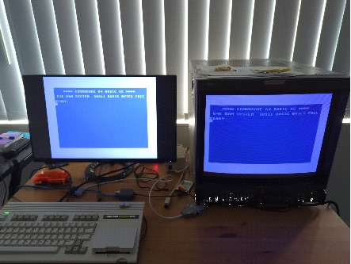
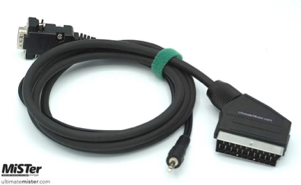
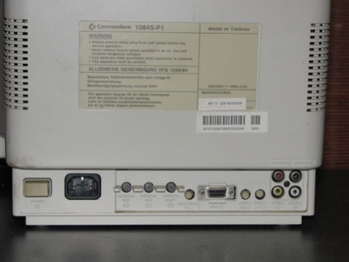

HDMI and Analog (VGA) Output
The MEGA65 sports two different connectors that you can use to connect a display: A HDMI connector and a VGA connector. Our philosophy on the MEGA65’s outputs is that over the VGA output, we deliver the “pure” retro-output (and you can also switch it to 15 kHz and composite sync for a true retro feeling) while HDMI is the “processed” modern output. So there is no “processing” such as CRT emulation and other things on the VGA output, while on the HDMI output several algorithms are working for a very nice looking authentic image.
Because we expect more users to connect to HDMI, the description for HDMI modes is first in this documentation, followed by the VGA/CRT modes.
You can use both modes in parallel. The C64 core always outputs on both options.
HDMI modes
About Frame Rate and stuttering
The original PAL C64 outputs 50.125 interlaced frames per second. Unfortunately HDMI monitors run at exactly 50 frames per second and sometimes only at 60 frames per second. The Core can deal with all these situations, but you will get visible artifacts (stuttering) or a tiny bit of incompatibility.
- If your monitor can process AND display 50.125 frames per second, you get the full real experience. This is highly unlikely though.
- If your monitor can process 50.125 frames per second but only displays 50 frames per second, you will see a tiny “stutter” approx. every 2, 4 or 8 seconds (depending on the internal frame processing of interlaced images). You can remove this stutter with the “HDMI Flicker Free” option, which will slow down the full Core by a tiny amount so that the output is exactly 50 frames per second.
- If your monitor can process 50.125 or 50 frames per second but can only display at 60 frames per second, the monitor will add a “stutter” every 10th of a second. Yes, that is ten stutters per second. Depending on the internal electronics, it might be better to switch the Core into a 60 Hz output mode.
- If your monitor can only process 60 frames per second you have no other choice but to put the Core into 60 Hz output mode.
There are two methods to check out your monitors capability.
- The game “Great Giana Sisters” has a perfect constant 50 frames per second scroll in the title screen. Just watch whether the letters move smoothly or whether you see the tiny stutter every few seconds.
- There is programm called “VideoTest” on csdb. Pressing the number keys 1 to 5 shows different test patterns. Number 1 shows a perfect black and white scroll that makes it very easy to see how your monitor processes the image. Find this programm here: https://csdb.dk/release/?id=198494
Reminder: The current version of the Core does not support the NTSC models of the C64 which would output nearly (!) 60 interlaced frames per second, adding to the complexity here.
The HDMI Flicker-Free option
When you turn on the “HDMI Flicker-Free” option, the whole system interally is slowed down a tiny bit. The CPU, the emulated disc drive, everything “inside” the MEGA65 is running slightly slower. The video output is now 50 fps instead of 50.125 fps and so the output is smoother. Even though your C64 is now only running at 99.75% of its real speed, you should not notice any difference but in two cases:
- You have external hardware connected to either the cartridge port or the IEC bus that is extremly timing intolerant. This can include some copy protection schemes that are counting every processor cycle, but your external 1541 now runs “too fast” for the C64. Because of the tiny speed difference, this should happen only in extreme cases.
- If you have perfect pitch hearing, you might notice a difference with some sounds. Depending on how music is programmed (especially with digitized effects), it is now shifted slighty lower and some (!) people can actually hear that. Most of us can’t.
Bonus: You can turn the Flicker-Free option on and off at any time and without resetting/rebooting. The option works immediately.
Warning: This option can theoretically also be used with VGA-based displays which only makes sense if they are LCD-screens with fixed display rates. Do not use the option with CRTs (i.e. big bulky weighty full of glass tube monitors). They can perfectly well use the 50.125 fps and flicker-free has no positive (and maybe even negative) effects.
HDMI Display Mode
The first four options of the HDMI menu give you two fixed resolutions with different aspect ratios or screen refresh rates.
- 16:9 720p 50 Hz The default mode (unless saved in a configuration) that should work with any HDMI monitor. It shows black bars on the left and right to correctly show the PAL aspect ratio of the C64 on a modern 16:9 screen. It also adds some lines on the top and bottom to make the upscale more even.
- 16:9 720p 60 Hz This mode is only for monitors that can not process a 50Hz input or have bad 50->60 Hz conversion. If turned on, you will get 10 “stutters” per second. Please read above explanation of frame rates. It also shows a black box around the picture.
- 4:3 576p 50 Hz This configuration is very compatible with HDMI monitors but they might stretch the picture to 16:9 on their own - you would need to switch this off on your monitor, not the Core. Because the output can just double the lines instead of oddly upscaling to 720 lines, the vertical resolution is much cleaner.
- 5:4 576p 50 Hz This resolution might not compatible with your HDMI display, but if it is it usually gives you the most realistic picture. The aspect ratio is the one the original C64 would display on an “old” TV. Also for people documenting games for videos, this resolution gives the most realistic look for framegrabbers. Most screenshots in this documentation were done in this mode with a cheap USB3 framegrabber.
Every monitor is different. You can switch between modes on the fly to see what gives you the best picture. For example, on some monitors the 4:3 resolution is unstretched and the 5:4 is and on others it just works the opposite way.
Black border
When you look at the HDMI-output via a frame grabber, every resolution will show some extra black lines or a black box around the light blue C64 border shown when you turn on the machine. Some black lines are unavoidable because these are the lines during the vertical blank when the video chip does not output anything at all. In 720p modes, there is a black box to display a correct aspect ratio by centering the C64 picture and adding black around it to fill up the standard 16:9 720p frame.
To minimize that black box you can select the Zoom In option in the main menu.
HDMI : Flicker-free
Please see the complete explanation above. You can turn this on and off without rebooting.
HDMI: DVI (no sound)
This is a compatibility setting for some monitors that will not process the Core´s HDMI output when it also contains an audio signal. This will turn off audio output on HDMI. You will then need to connect speakers to the audio output jack of the MEGA65. There is no benefit to turn this on if your monitor works fine without this option.
HDMI Troubleshooting
Right now, the C64 Core is not compatible with all HDMI displays. If your display works with the MEGA65 core but stays black when you load the C64 Core, when try this (while the display is black):
- Boot the C64 core and wait a few seconds.
- Press the Help key.
- Press the Up cursor key seven times (7x).
- Press Return.
- Press the Down cursor key five times (5x).
- Press Return.
- Wait a few seconds.
- If this does not solve the issue, continue:
- Press the Up cursor key four more times (4x).
- Press Return.
- Wait a few seconds.
- If this does not solve the issue, continue:
- Press the Down cursor key one time (1x).
- Press Return.
Explanation: DVI mode, 60 Hz mode, 576p
The recipe above first activates the “DVI mode” as you are choosing the menu item “HDMI: DVI (no sound)” in the on-screen-menu when you press the Return key for the first time.
In DVI mode, the HDMI data stream sent by the core to your display has a slightly different format and it does not contain any sound. You need to use the 3.5mm audio-out in this case.
When you press Return for the second time, the 60 Hz mode is activated, independent of the C64’s output, which is still 50 Hz in PAL mode. This works fine in general, but leads to some flickering and jerky scrolling here and there.
The third press of Return switches from 720p to 576p.
Analog (VGA) Output
Disclaimer: While we use the abbreviation VGA a lot, that is because the connector is most often referred to as a VGA connector. The MEGA65 does not output any format that is identical to IBM PC VGA graphics cards. You can successfully connect analog monitors with VGA-cables to the VGA-connector on a monitor.
For a true retro feeling, we are providing as standard a 4:3 image via the MEGA65’s VGA port, so that you can connect real CRT monitors or older 4:3 LCD/TFT displays. The resolution is 720x576 pixels and the frequency is 50.125 Hz in PAL mode. If your monitor fully supports this, you will experience silky smooth scrolling without any flickering and tearing. If you are using a “flat screen” you might want to switch on HDMI flicker free mode but we would recommend using HDMI with flat screens anyway.
Retro 15 KHZ for Cathode Ray Tubes
The C64 for MEGA65 core is capable of providing analog retro signals via the VGA port that have a 15 kHz horizontal frequency and that either use a horizontal+vertical synchronization signal or a composite synchronization signal. The signal itself is a component signal.
IMPORTANT CAUTIONS: (Not following these rules might destroy your retro device)
Only connect such a retro screen while having the 15 kHz retro VGA mode active. Never connect it when the “Standard” mode is active, which yields 30 kHz or more. High horizontal frequencies damage these cathode ray tubes. Disconnect these screens when you are using other cores or the MEGA65 mode.
Always use the right cable. Particularly when you use SCART, the voltages need to be correct and therefore you need to buy a cable with a built-in resistor.
When using retro gear via the MEGA65 VGA port: Make sure that you disable HDMI: Flicker-free otherwise you might run into a bunch of problems.
VGA to BNC cable
To connect high-end or broadcast/production monitors with BNC connectors for RGB, you will require a VGA Plug to 5 BNC RGB Male Plugs Video Cable. However, if you’re using it for retro RGB video, connecting 4 plugs should suffice unless you’re connecting to a projector or plasma TV that requires separate horizontal and vertical syncing signals. The C64 core also supports this mode over 15kHz, making it a useful cable to have.
Cable and connection details
To set up retro RGB, you’ll need three RGB signals along with CSYNC. In the case of the C64 for MEGA65 core, the horizontal sync will be used as CSYNC. For CSYNC, you can use the white lead, while the black lead can be left unconnected. Connect the R (Red), G (Green), and B (Blue) signals to their respective analog inputs on the device or monitor. Take the CSYNC lead and connect it to the “external sync” input to the composite input panel. By following these instructions, you will ensure the proper connection of the RGB signals and CSYNC for correct functionality.
Connect the opposite end of the cable to the MEGA65’s VGA port.
Configuring the Core correctly
Look at the screenshot and choose the following options in VGA and HDMI display modes. Turn off flicker-free and switch the standard mode to 15 Khz with CSYNC.
Important: Before turning on the monitor, make sure to switch from the Standard mode to the Retro 15Khz mode + CSYNC. Providing the CRT with a 31kHz signal could potentially damage your equipment. Exercise caution and ensure the correct setting is selected to avoid damage to the monitor.
Example setup
A second LCD monitor will be useful for making the necessary adjustments to the configuration.
SCART
For connecting your MEGA65 to a Commodore 1084S or Philips CM8833 monitor with a SCART input you can use a MiSTer VGA to SCART cable like this one:
See here for where to purchase and availability and also make sure that you understand the importance of buying a cable that has a built-in resistor versus simple “pass-through” cables: https://www.retrorgb.com/beware-of-mister-scart-cables.html
DB9 RGB
For the later Commodore monitors such as the 1084S-P1 or Philips CM8833 Mark II, these have a DB9 RGB input as pictured below:
Use the following VGA to DB9 RGB cable which can be found on eBay (example from Australia, adjust to your country).